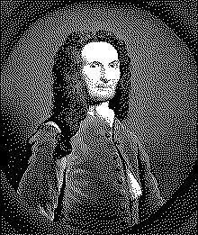

| годы жизни | 1667–1754 |
| страна | Франция → Англия · эмигрант-гугенот |
| область | вероятность · тригонометрия · анализ |
| главное | нормальное распределение · прото-ЦПТ · The Doctrine of Chances · формула де Муавра |
| характер | профессиональный консультант игроков · бедный эмигрант · друг Ньютона |
Математик который предсказал дату своей смерти.
гугенот-эмигрант вычислял шансы в лондонских кофейнях — и нашёл колокол.
Абрахам де Муавр родился во Франции в 1667 году. В 1685 году Людовик XIV отменил Нантский эдикт — гугеноты лишились свободы вероисповедания. Де Муавр бежал в Лондон. Ему было 18 лет.
В Англии он не смог получить профессорскую должность — иностранцам закрывали путь в университеты. Зарабатывал частными уроками. И консультациями.
Лондонские кофейни XVII–XVIII века были центрами интеллектуальной жизни. Купцы, игроки, страховщики — все хотели знать шансы. Де Муавр сидел в кофейне Slaughter's и вычислял вероятности за деньги. Аристократы платили ему за расчёт шансов в картах, костях, пари.
Из этой работы выросла его главная книга. «The Doctrine of Chances» — «Учение о шансах» — вышла в 1718 году и посвящена Исааку Ньютону1. Три издания при жизни автора. Первый систематический учебник по вероятности на английском языке.
Де Муавр дружил с Ньютоном. По легенде Ньютон отсылал студентов к де Муавру: «Он знает эти вещи лучше меня».
Считая биномиальные вероятности для больших n де Муавр в 1733 году заметил паттерн2. Распределение приобретает характерную форму. Колокол. Он вывел формулу аппроксимации — первое описание нормального распределения.
Гаусс позже применил его к ошибкам измерений. Лаплас обобщил до центральной предельной теоремы. Но первым был де Муавр — считая шансы для игроков.
Формула де Муавра: (cos θ + i sin θ)ⁿ = cos(nθ) + i sin(nθ). Из неё вырастет формула Эйлера: e^(iπ) + 1 = 0.3
Связывает тригонометрию с комплексными числами. Следствие: можно выразить sin и cos через e^(iθ).
Де Муавр прожил 87 лет — долго для XVIII века. В конце жизни он заметил странную закономерность4: каждую ночь он засыпал на 15 минут дольше. Он экстраполировал арифметическую прогрессию и вычислил дату когда время сна достигнет 24 часов. 27 ноября 1754 года.
Де Муавр умер 27 ноября 1754 года. Вероятно от старости и истощения. Но легенда про расчёт осталась. Математик посчитал дату своей смерти.
Умер бедным — несмотря на дружбу с Ньютоном и признание в научном мире. Академии Лондона, Парижа и Берлина избрали его членом. Профессорской должности он так и не получил.